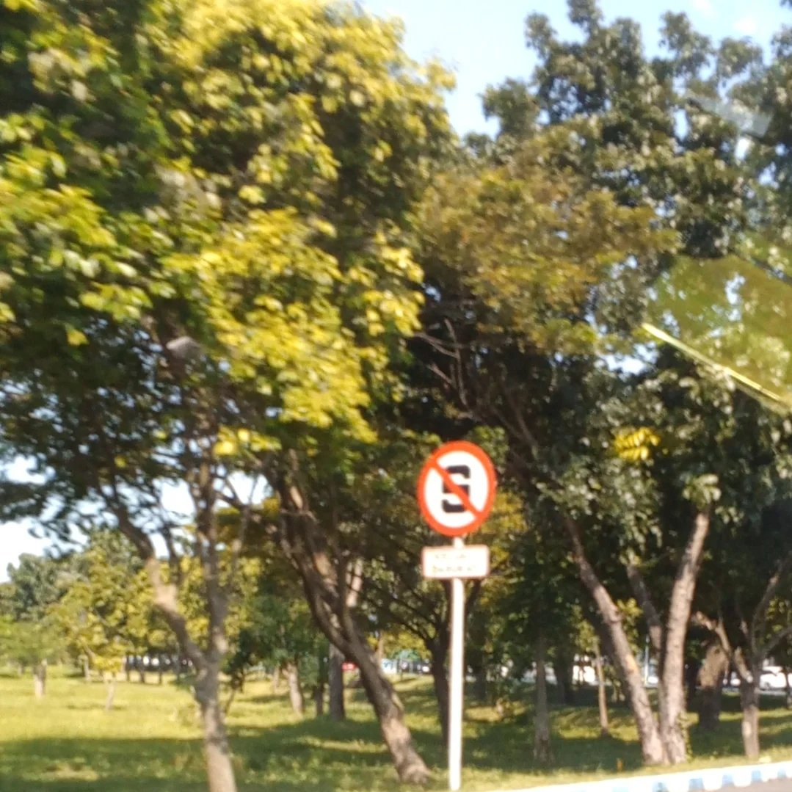

Halooo nama saya Dinna Hanifa, akrab dipanggil Dinna atau Din. Saya lahir pada tanggal 27 October tahun 2008 di Praya, Lombok Tengah. Saya merupakan mahasiswa aktif di Universitas Mataram prodi Sarjana Teknik Informatika. Saya memiliki ketertarikan yang besar pada bidang matematika, dan teknologi. Saya merupakan alumni SMA IT PUTRI ABU HURAIRAH MATARAM, SMP IT PUTRI ABU HURAIRAH MATARAM dan SDN 4 PRAYA.
Perkembangan terhadap sains saya berhenti sejenak kala memasuki bangku SMP di pondok pesantren. Tidak ingin berhenti disitu, di tahun 2025, saya mulai berpartisipasi Kembali dalam Olimpiade Sains Nasional dan Olimpiade Bahasa Arab tingkat kota Mataram. Selain aktif di bidang akademik, saya juga berpartisipasi dalam organisasi OSIS INTI sebagai Wakil Ketua Divisi Kebersihan di Ponpes Putri Abu Hurairah Mataram periode 2025/2026. Walaupun skill computer saya tidak banyak atau bisa dibilang sangat minim alias gaptek, saya memiliki ketertarikan yang besar terhadap ilmu IT, saya bercita cita menjadi ahli komputer. Maka dari itu, saya memilih untuk mendaftar jalur SNBP di Universitas Mataram prodi Teknik Informatika sebagai perjalanan menuju mimpi saya.
Saya akan membuktikan kepada kedua orang tua saya, guru-guru saya, teman-teman saya, dan semua orang yang ada di dunia ini bahwa saya bisa meraih mimpi saya dengan tekad dan usaha yang kuat dan sungguh sungguh. Saya yakin, saya bisa melewati segala tantangan yang ada, segala kekecewaan yang sudah disiapkan, dan segala kemenangan yang ditakdirkan.